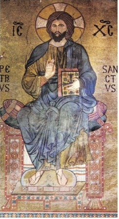

What is Jesus’ teaching regarding salvation?
Jesus here gives a clear protocol for salvation; namely, to help those in need, even anonymously.

Matthew 25 - Parable of the Sheep and Goats
Mt 25:31 When the Son of man shall come in his glory, and all the holy angels with him, then shall he sit upon the throne of his glory: 25:32 And before him shall be gathered all nations: and he shall separate them one from another, as a shepherd divideth his sheep from the goats: 25:33 And he shall set the sheep on his right hand, but the goats on the left. 25:34 Then shall the King say unto them on his right hand, Come, ye blessed of my Father, inherit the kingdom prepared for you from the foundation of the world: 25:35 For I was an hungred, and ye gave me meat: I was thirsty, and ye gave me drink: I was a stranger, and ye took me in: 25:36 Naked, and ye clothed me: I was sick, and ye visited me: I was in prison, and ye came unto me. 25:37 Then shall the righteous answer him, saying, Lord, when saw we thee an hungred, and fed thee? or thirsty, and gave thee drink? 25:38 When saw we thee a stranger, and took thee in? or naked, and clothed thee? 25:39 Or when saw we thee sick, or in prison, and came unto thee? 25:40 And the King shall answer and say unto them, Verily I say unto you, Inasmuch as ye have done it unto one of the least of these my brethren, ye have done it unto me. 25:41 Then shall he say also unto them on the left hand, Depart from me, ye cursed, into everlasting fire, prepared for the devil and his angels: 25:42 For I was an hungred, and ye gave me no meat: I was thirsty, and ye gave me no drink: 25:43 I was a stranger, and ye took me not in: naked, and ye clothed me not: sick, and in prison, and ye visited me not. 25:44 Then shall they also answer him, saying, Lord, when saw we thee an hungred, or athirst, or a stranger, or naked, or sick, or in prison, and did not minister unto thee? 25:45 Then shall he answer them, saying, Verily I say unto you, Inasmuch as ye did it not to one of the least of these, ye did it not to me. 25:46 And these shall go away into everlasting punishment: but the righteous into life eternal.
According to Jesus’ explanation of salvation here, his crucifixion is not necessary; baptism of the saved person is not necessary; even recognition of Jesus’ identity is not necessary, much less faith or belief in any doctrine other than helping those in need. On the other hand, turning away from those in need, which so-called Christians find easy today, is condemned in terms just as clear.
~~~~~~~